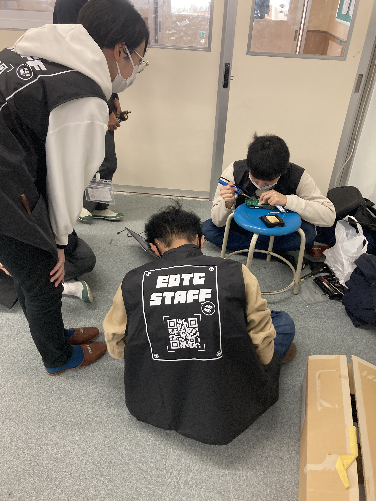
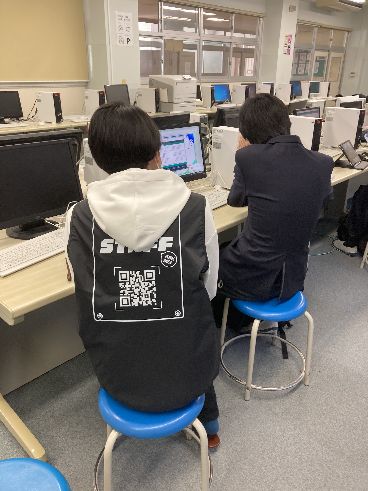

今年度最後のとなる、第十回遊行塾を実施させていただきました。
今回は初の先生役でありながら遊行塾の締めを担当させてもらいました。
今年度は生徒さんの進捗も非常に良く、完成したライントレーサを使いタイムアタックを実施することが出来ました。

生徒の皆さんには授業時間をいっぱいに使ってタイムアタックにトライして欲しかったのですが、
機体のトラブルが相次ぎ中々タイムアタックに取り組んでもらうことが出来ませんでした。
それでも、我々スタッフも機体修理に奔走し、何とかタイムアタックを実施することが出来ました。

タイムアタックでは、生徒さんは自分の機体の挙動とプログラムを確認してライントレースの精度を上げるために、
if文の条件やモーターの出力を調整して他の生徒さんと競い合いながら試行錯誤を繰り返していました。
最終的に、タイムアタックにて完走を出来たのは1名のみでしたが、完走のために試行錯誤する姿には我々スタッフも感動しました。
初の先生役でしたが、スタッフの協力と生徒さんの頑張りのおかげで熱いタイムアタックを行うことが出来ました。
今年度の遊行塾はこれで終了となりますが、来年度も引き続き遊行塾を開催していく予定です。